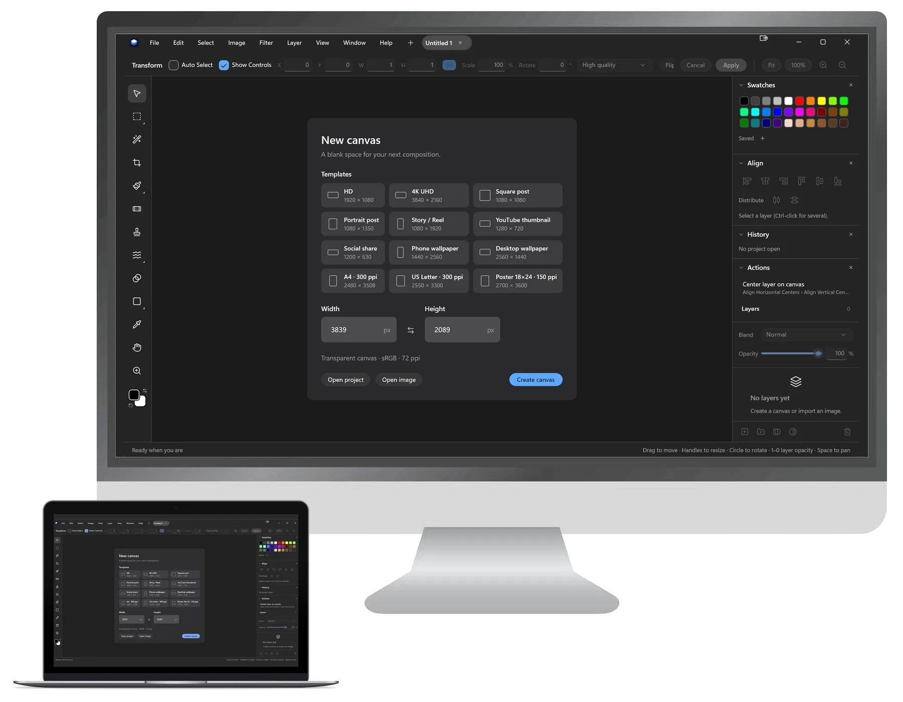

Serious image editing, free on Windows.
Layer Form is an open-source editor for compositing and retouching — layers, masks, selections, healing, color adjustments and one-click background removal. No subscription, no account.
Download for Windows
Everything you need to build a finished image
If you've used Photoshop, you already know your way around — the tools, panels and shortcuts work the way you expect.
Layers and masks
Layers and folders with blend modes and opacity, layer and clipping masks, and adjustment layers for Levels, Curves, Hue/Saturation and more.
Precise selections
Marquee, freehand and polygonal lasso, and a Magic Wand with smooth edges. Add, subtract, expand and contract, or load a layer as a selection.
Paint and retouch
Brush and eraser, Spot Healing, Clone Stamp, Smear, gradients, and Content-Aware Fill to remove objects or extend a photo past its edges.
Remove Background
Cut out a subject in one step with BiRefNet models that run on your own GPU through DirectML — nothing is uploaded.
Swatches, alignment and actions
Dockable Color, Swatches, Align, History and Actions panels. Align and distribute layers, save your colors, and replay recorded steps.
Opens what you have
JPEG, PNG, TIFF, WebP, AVIF, HEIC, GIF, BMP and SVG. Work in tabs, import images as layers, and export PNG or JPEG.
Always up to date, never interrupted
Layer Form checks for new versions when it starts and lets you decide what happens next.
- You're told what's new. When an update is out, a dialog shows the release notes.
- You choose. Download and install now, skip that version, or be reminded later.
- Your work is safe. Layer Form asks you to save open projects, installs the verified update and reopens.
No administrator rights needed — Layer Form installs for your user account only.
Update available
Layer Form 1.2.0 is ready to download. You have version 1.1.0.
Found a bug? Have an idea?
Use Help › Report a Bug or Help › Request a Feature in the app — it fills in your version and Windows details for you — or open an issue directly.